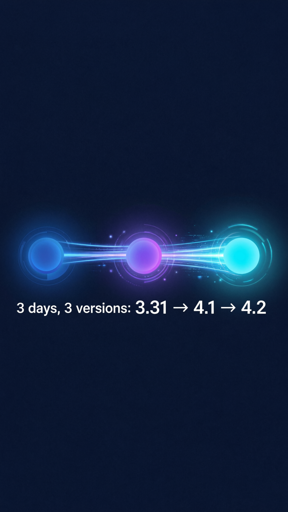
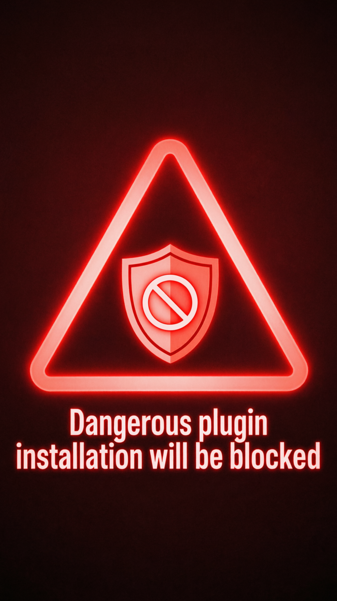
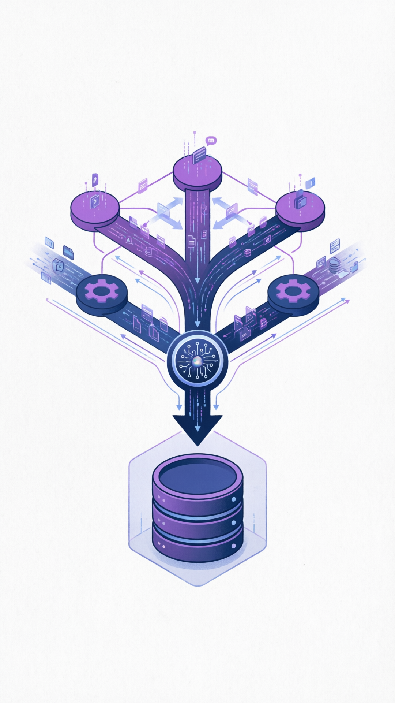
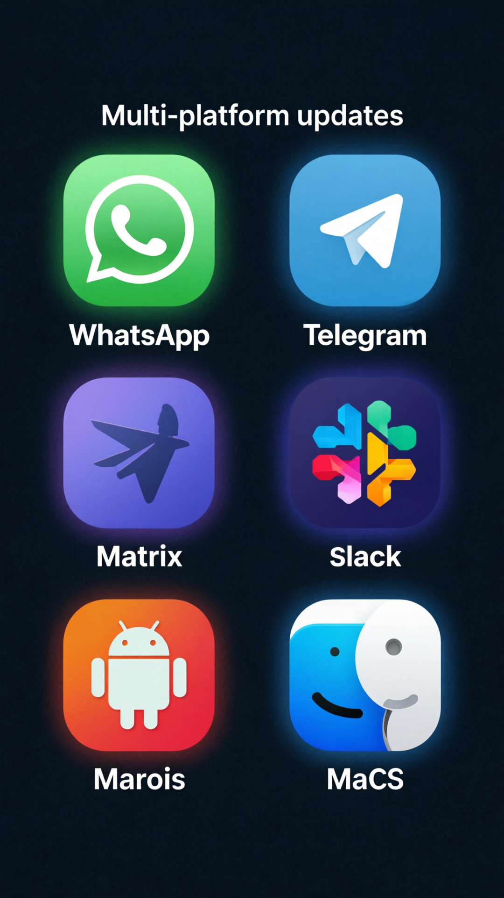

横跨破坏性变更、功能重构和大规模安全加固
内置危险代码扫描，检测到严重问题时安装直接失败。Cisco AI安全研究团队曾发现第三方技能存在数据外泄和提示注入风险。
危险插件将被直接拦截
ACP任务、定时任务、子智能体任务统一接入SQLite支撑的「任务流」账本。
调试和恢复出错任务变得可操作
使用xAI搜索或Firecrawl网页抓取的用户需要迁移配置。
openclaw doctor --fix
3天内连续推送三批更新

Cisco的AI安全研究团队测试发现，第三方OpenClaw技能存在数据外泄和提示注入行为。这次更新是对这些安全风险的必要补救。
第三方技能可能未经授权访问敏感数据
恶意提示可能操纵AI行为

统一接入SQLite支撑的「任务流」账本

异步任务统一管理
Cron任务调度
多代理协作
四大安全机制全面收紧
节点配对不再自动获得命令权限，必须等待节点配对被明确批准。
Python包索引、Docker端点等敏感环境变量不允许传入Shell环境。
沙箱不存在时，显式指定沙箱会直接失败，而不是隐式降级。
内置危险代码扫描，检测到数据外泄或提示注入等严重问题时安装直接失败。
WhatsApp、Telegram、Matrix、Slack、Android、macOS 等多平台同步更新

emoji消息反应
审批请求话题内
流式回复更新
全程内嵌审批
Google Assistant
Voice Wake唤醒
捆绑插件支持
捆绑插件支持